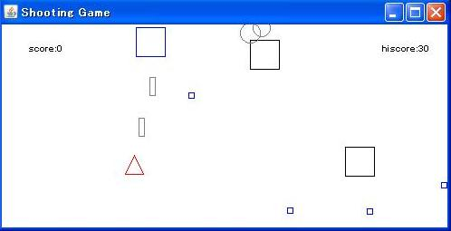
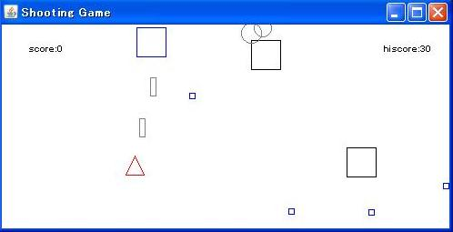

IPlanning
株式会社 アイプランニング
Towa Edogawabashi building 8F
Yamabuki-cho 347
Shinjuku-ku Tokyo
Phone: 03-5225-1147
技術情報
このページでは、アイプランニング社員が調査したこと、学んでいることが
具体的にどんなものなのかを披露します。
プログラム初心者の方向けの情報から、超マニアックな分野の情報まで随時提供していきます。
第三回 Google App Engine/Javaで簡易Blogを作ってみる 2009/12/28
Google App Engine連載記事です。Google App Engine/JavaでServletとJSPを使用し、簡易Blogを作成します。
⇒「Google App Engine/Javaで簡易Blogを作ってみる」詳細
⇒「Google App Engine/Javaで簡易Blogを作ってみる」詳細
第二回 Google App Engine/Javaデータストアの特徴 2009/12/28
Google App Engine連載記事です。Google App Engine/Javaで使えるキー・バリュー型DBのBigTableの特徴について解説します。特に分かりづらい、JDOを通して関連を設定する方法について重点的に説明します。

⇒「Google App Engine/Javaデータストアの特徴」詳細
⇒「Google App Engine/Javaデータストアの特徴」詳細
第一回 Google App Engine/Javaの特徴・Eclipseプラグインのインストール 2009/12/28
Google App Engine連載記事です。Googleのクラウドを手軽に使える、Google App Engine/Javaの特徴・限界と、導入方法についてまとめました。

⇒「Google App Engine/Javaの特徴・Eclipseプラグインのインストール」詳細
⇒「Google App Engine/Javaの特徴・Eclipseプラグインのインストール」詳細
SQL Server 2008 Expressのインストール 2009/12/08

Curl特集(2) ドキュメントビューアを作る 2009/07/14
RIA環境「Curl」ならではの機能の利用例として、ActiveXの利用、高速なインクリメンタル検索、スクリーンショット防止等の作成方法を公開します。
⇒「Curl特集(2) ドキュメントビューアを作る」詳細
⇒「Curl特集(2) ドキュメントビューアを作る」詳細
CurlとRubyOnRails連携調査 エンタープライズ向けRIA 2009/06/11
エンタープライズ向けリッチクライアント環境(RIA)「Curl」について調査しました。CurlとRuby on Railsとの連携
⇒「CurlとRubyOnRails連携調査 エンタープライズ向けRIA」詳細
⇒「CurlとRubyOnRails連携調査 エンタープライズ向けRIA」詳細
Flashプレゼン作成ツール DebugMode Wink 2009/04/01
画面をFlashムービーとして記録し、チュートリアルやプレゼンテーションを作成することができるWinkを使って、簡単な画面操作デモを作ってみましょう。
⇒「Flashプレゼン作成ツール DebugMode Wink」詳細
⇒「Flashプレゼン作成ツール DebugMode Wink」詳細
開発効率を向上させるフリーソフトウェア 2009/01/06
AJAX+JavascriptDBで簡易CSVデータベース利用 2008/10/16
CSVをRDB風に準備、作成し、AJAXとJavascriptDBを利用してリアルタイム応答を実現するように作ってみました。

⇒「AJAX+JavascriptDBで簡易CSV-RDBのサンプル」詳細
⇒「AJAX+JavascriptDBで簡易CSV-RDBのサンプル」詳細
coLinuxでUNIX学習 Linux環境をWindows上に構築 2008/06/24
スクリプト言語Pythonによるhtml生成 2008/05/08
達人プログラマーから学ぶ効率的な開発手法 2008/04/03
DRY原則、コードの自動生成、アジャイル開発手法をキーワードに、「達人プログラマー」の内容をまとめました。
先輩に「達人プログラマー」という本を貸していただき自分の経験に照らし合わせて、大事だと考えたことをまとめてみました。
⇒「達人プログラマーから学ぶ効率的な開発手法」詳細
先輩に「達人プログラマー」という本を貸していただき自分の経験に照らし合わせて、大事だと考えたことをまとめてみました。
⇒「達人プログラマーから学ぶ効率的な開発手法」詳細
JavaアプリケーションのWindowsVista移行ガイド 2008/03/04
VistaではUAC（ユーザー・アカウント制御）により、セキュリティの向上が図られました。それに伴いファイルシステムなどで仕様変更があり、一部のソフトウェアで互換性が失われています。
今回は、Vistaでも今までのJAVAアプリケーション(JavaWebStart)が問題なく使えるのかどうかを探ってみました。
⇒「JavaアプリケーションのWindowsVista移行ガイド」詳細
今回は、Vistaでも今までのJAVAアプリケーション(JavaWebStart)が問題なく使えるのかどうかを探ってみました。
⇒「JavaアプリケーションのWindowsVista移行ガイド」詳細
モバイルガジェット(NetFront)について 2008/02/26
NetFrontとは、ACCESS社が開発した組み込み機器用ブラウザです。携帯電話、PDA、ゲーム機など、さまざまな機器で採用されています。
中でもモバイルガジェットが動作する携帯電話の標準ウェブブラウザとして大きなシェアを持つことも予想されています。
今回はNetFrontでのモバイルガジェット作成について調査しました。

⇒「モバイルガジェットへの道 NetFront利用例」詳細
今回はNetFrontでのモバイルガジェット作成について調査しました。
⇒「モバイルガジェットへの道 NetFront利用例」詳細
Subversion (SVN) の使用方法について 2008/01/15
Subversion（サブバージョン）はプログラムのソースコードなどを管理するバージョン管理システムの一つです。
今回はSubversion + Eclipse + Subclipsenについて解説します。
⇒「Subversion (SVN) の使用方法について」詳細
⇒「Subversion (SVN) の使用方法について」詳細
Java版シューティングゲームで遊ぶ 2007/09/03
２００７年の新人教育でJavaを用いたシューティングゲームを作成してもらいました。
シンプルですが意外とハマるのでご注意下さい。尚、ソースコードも公開しておりますので、ご自身でさらなる面白みを使いして楽しんで下さい。

⇒「Java版シューティングゲーム」詳細
シンプルですが意外とハマるのでご注意下さい。尚、ソースコードも公開しておりますので、ご自身でさらなる面白みを使いして楽しんで下さい。

⇒「Java版シューティングゲーム」詳細
GoogleMapをWEBページに貼り付けるには？ 2007/08/09
地図情報として便利なGoogleMapを当サイトに貼り付けた手法を公開します。

当サイトの所在地(地図)では、GoogleMapで地図情報提供し、 さらにはGoogleガジェットで、「電車の乗り換え案内検索」を取り入れました。 ⇒「GoogleMapをWEBページに貼り付けるには？」詳細
当サイトの所在地(地図)では、GoogleMapで地図情報提供し、 さらにはGoogleガジェットで、「電車の乗り換え案内検索」を取り入れました。 ⇒「GoogleMapをWEBページに貼り付けるには？」詳細
WEBで自動返信(サンキューメール)をASPで実現するサンプル 2007/07/01
新卒採用の応募、セミナーへの応募時に、応募者に対して自動的にサンキューメールを送る
ことをASP(Active Server Pages)で実現するサンプルコードを公開します。 ⇒「WEBで自動返信(サンキューメール)をASPで実現するサンプル」詳細
ことをASP(Active Server Pages)で実現するサンプルコードを公開します。 ⇒「WEBで自動返信(サンキューメール)をASPで実現するサンプル」詳細
IPL インフォメーション
プログラマ募集中・・・
■第一は「人物重視」
お客さまの立場に立ってモノが作れる判断力、企画力、コンサルティング能力を磨きたくはありませんか？プログラム能力は、プロジェクトを通じて自然と能力があがるようなシステムになっています。初心者プログラマであっても３年程度で、その能力は初心者だったとは思えないくらいのスキルとなっています。
これは、「最初は誰でも初心者だ」という教育方針があるため、また、多くの社員が入社して初めてプログラミングにふれたという経験があるために自分のつまづき体験や、成功体験を含めた教育がなされているからなのです。
このようにアイプランニングでは、社員１人ひとりの個性と人間性を重視し、スキルにあったマンツーマン教育であなたを一人前のエンジニアへと成長させていきます。 それは誠実なスタッフが集まっているからこそ、どんなお客様からも信頼される企業に成長できるから。私たちはそう考えています。
お客さまの立場に立ってモノが作れる判断力、企画力、コンサルティング能力を磨きたくはありませんか？プログラム能力は、プロジェクトを通じて自然と能力があがるようなシステムになっています。初心者プログラマであっても３年程度で、その能力は初心者だったとは思えないくらいのスキルとなっています。
これは、「最初は誰でも初心者だ」という教育方針があるため、また、多くの社員が入社して初めてプログラミングにふれたという経験があるために自分のつまづき体験や、成功体験を含めた教育がなされているからなのです。
このようにアイプランニングでは、社員１人ひとりの個性と人間性を重視し、スキルにあったマンツーマン教育であなたを一人前のエンジニアへと成長させていきます。 それは誠実なスタッフが集まっているからこそ、どんなお客様からも信頼される企業に成長できるから。私たちはそう考えています。
■応募者へのメッセージ
プログラマを目指して会社に入ったものの、思った通りの仕事をさせてもらえなかったと思っている人、教育システムが十分でなかったためにスキルが身に付いていないと思っている人も気軽にご応募ください。パソコンのスキルに自信のない方でも、マンツーマンの研修制度で一人前に成長できるフィールドを整えておりますので安心してご応募くださいね。
知識だけでなく本当の開発力が身につく環境でのシステム開発でみつかる『やりがい』はもちろん、プライベートでも今までになかった充実感が得られますよ。
プログラマを目指して会社に入ったものの、思った通りの仕事をさせてもらえなかったと思っている人、教育システムが十分でなかったためにスキルが身に付いていないと思っている人も気軽にご応募ください。パソコンのスキルに自信のない方でも、マンツーマンの研修制度で一人前に成長できるフィールドを整えておりますので安心してご応募くださいね。
知識だけでなく本当の開発力が身につく環境でのシステム開発でみつかる『やりがい』はもちろん、プライベートでも今までになかった充実感が得られますよ。
最寄りは有楽町線江戸川橋駅
■地下鉄有楽町線
池袋 → ６分 → 江戸川橋駅
有楽町 → 12分 → 江戸川橋駅
江戸川橋駅下車 徒歩３分
池袋 → ６分 → 江戸川橋駅
有楽町 → 12分 → 江戸川橋駅
江戸川橋駅下車 徒歩３分
■地下鉄東西線
中野 → 11分 → 神楽坂駅
大手町 → 11分 → 神楽坂駅
神楽坂駅下車 徒歩１０分
中野 → 11分 → 神楽坂駅
大手町 → 11分 → 神楽坂駅
神楽坂駅下車 徒歩１０分
おかげさまで創立２５周年
アイプラニングは、おかげさまで創立２５周年を迎えました。社会がバブル全盛の時も不況の時もアイプランニングを星の数ほどあるソフトハウスの中で御ひいきしていただいたお客様あってのこの２５年でした。
ありがとう御座います。これからも会社のシンボルとして掲げる「イノベーション」の名に恥じないシステム開発をお約束いたし、お客様の更なる発展をお手伝いさせていただきます。
ありがとう御座います。これからも会社のシンボルとして掲げる「イノベーション」の名に恥じないシステム開発をお約束いたし、お客様の更なる発展をお手伝いさせていただきます。
毎年９月に実施される社員旅行
2012年の社員旅行は沖縄県(石垣島)への２泊３日の旅行へ行ってまいりました。
ソフトウエア開発ポリシー
- お客様にとって本当に必要なシステムの姿を見極める
- エンドユーザが使い易い、より良いインタフェースを常に模索し提案する
- 知識と開発力を併せ持った開発チームを形成し、システム開発に取り組む
- こまめに意見交換をし、問題点、疑問点を早期に解決する
- システム開発を軸として一人一人が社会貢献を意識する
- 仏の心をもちながら、作業する手は鬼の如く迅速に行う
- 自分自身で開発目標を見つけ、時間を有効に使う
交流を深める機会が豊富
 人と人とのコミュニケーションがスムーズにできる事こそが迅速なシステム開発における重要な意味を持つものと考えております。アイプランニングでは、このような考えの下に、社員同士が交流する機会を社員旅行も含め大切なものとして位置付けております。
人と人とのコミュニケーションがスムーズにできる事こそが迅速なシステム開発における重要な意味を持つものと考えております。アイプランニングでは、このような考えの下に、社員同士が交流する機会を社員旅行も含め大切なものとして位置付けております。